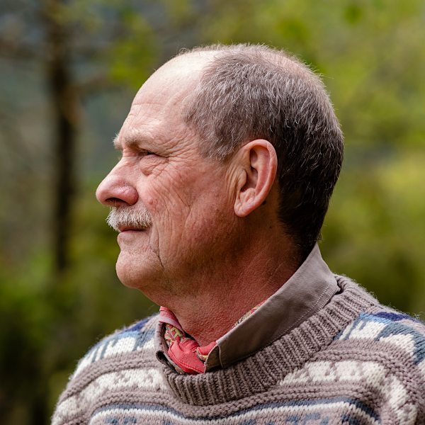

|
 |
Carlos M. Herrera
|
Ecology and evolution of plant-animal interactions
Ecological genetics and epigenetics of plants
Plant mating systems and reproductive biology
Epigenética,
ecología y evolución en plantas (Darwin no ha muerto, pero Lamarck
tampoco). Conferencia inaugural, Programa de
Doctorado en Biología Integrada, Universidad de Sevilla, November 2013.
Entry in the Ecological Society of America's Ecologists Directory
Interview by Carmen Recuero (Quercus, 2002)
Article by Benigno Varillas (Quercus, 2004)
Le ponemos cara a ... Carlos M. Herrera, by Erika López, Casa de la Ciencia, CSIC.
Reflections on papers past: Revisiting Herrera et al. 1994 (December 2018)
2025. Honorary Doctorate, University of Jaén.
2024. Premi Ramon Margalef d'Ecologia, Generalitat de Catalunya.
2024. Premio Francisco de Asís. Academia de Ciencias Sociales y de Medio Ambiente de Andalucía - Caixabank.
2017. Ernst Haeckel Prize, European Ecological Federation
2011. Honorary Membership, Spanish Society of Evolutionary Biology (SESBE)2005. Premio Andalucía Medio Ambiente, Junta de Andalucía
2003. Thomson Reuters ISI Highly-cited Researcher
2003. Honorary Membership, Spanish Society of Terrestrial Ecology (AEET)
2002. Honorary Membership Award, Ecological Society of America
2001. Spanish National Research Award 'Alejandro Malaspina'
1995. Elected Member, Academia Europaea
1992. Corresponding Member, Botanical Society of America
1992. President's Award, American Society of Naturalists
1991. President's Gold Medal, British Ecological Society
1987. Corresponding Fellow, American Ornithologists' Union
1978. Doctoral Award, University of Sevilla
1974. Graduation Award, University of Sevilla